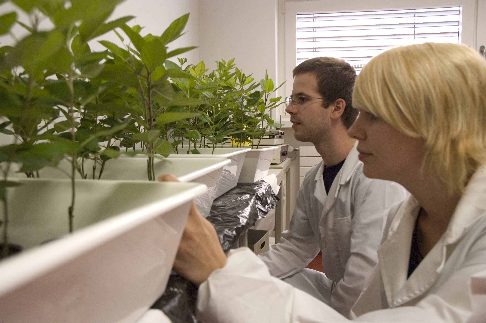

This two-year master focuses on sustainable landscape development as well as ecosystem and land-use management in mountain regions.
The programme is offered as a joint degree with Leopold-Franzens-Universität Innsbruck. The teaching language is English.
Its main teaching and research areas are ecosystem restoration, sustainability management and energy production. The location of both partner universities in the heart of the Alps is an ideal environment for enabling students to gain hands-on experience in field work and practical research methods.
During the first year, students will study at unibz, whereas most of the lectures during the second year will be held at Universität Innsbruck. Courses are taught by professors of both universities.
At a glance:
Voraussetzung für die Zulassung ist der Nachweis von Niveau B2 in zwei der drei Unterrichtssprachen (Italienisch, Deutsch, Englisch).